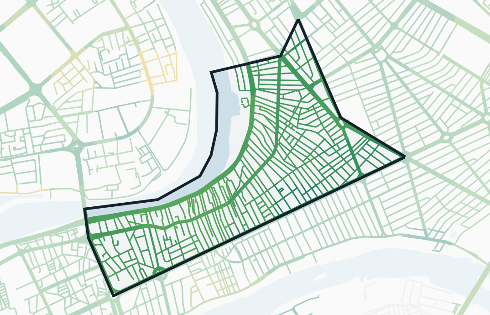

من أكثر من مليون اختبار سرعة أجراها الناس بأنفسهم في كل محافظات العراق، بين تموز وأيلول ٢٠٢٦.
معدل إنترنت البيت في العراق
٦٢ميغابت في الثانية
جيد، يكفي لفيديو 4K على أكثر من جهاز
كان المعدل ١٧ ميغابت في صيف ٢٠١٩
حي في بغداد
٨٧ميغابت في الثانية
جيد، يكفي لفيديو 4K على أكثر من جهاز
مقارنة بالمعدل
أسرع من ٩١٪ من مناطق العراق المقاسة.

كل شارع بلون سرعة الإنترنت فيه، والكرادة داخل الخط الأسود.
بطيءسريع
| البيت | الموبايل | |
|---|---|---|
| سرعة التنزيلميغابت في الثانية | ٨٧ | ٦٦ |
| سرعة الرفعميغابت في الثانية | ٦٦ | ٢٧ |
| البنغملي ثانية، الأقل أفضل | ٥ | ٣٣ |
| عدد الاختبارات | ٤٬٦٧٨ | ٧١٦ |
السرعات من Speedtest by Ookla، اختبارات تموز إلى أيلول ٢٠٢٦. الشوارع من OpenStreetMap. فكرة وتصميم @allawi.psd